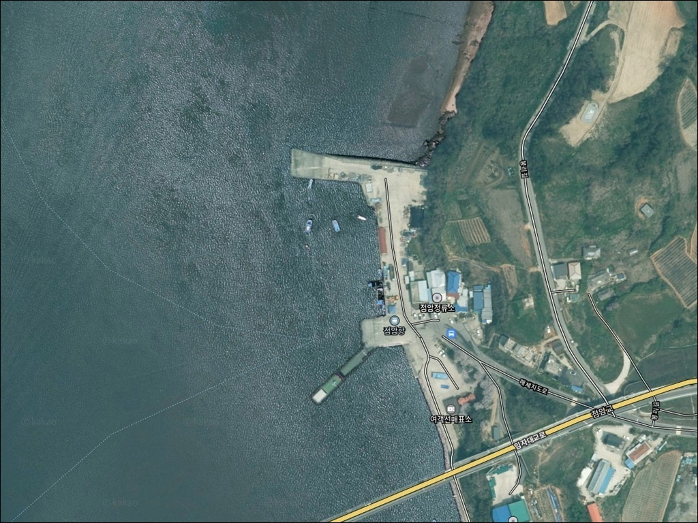
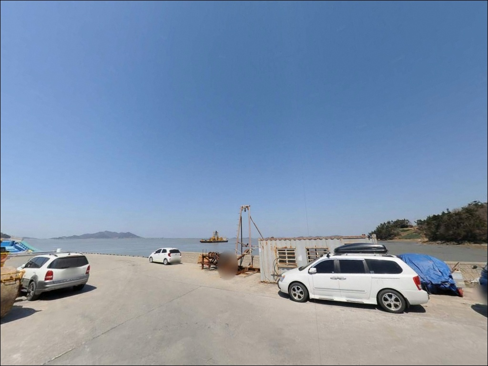
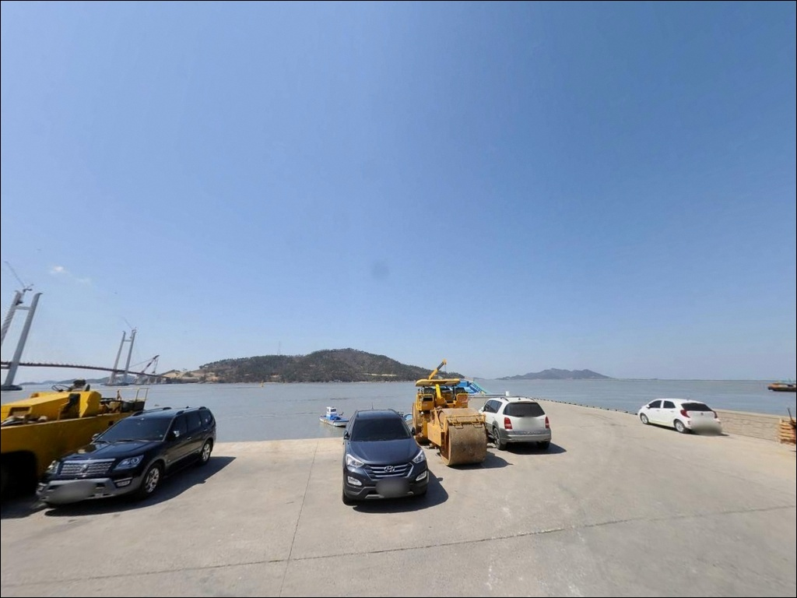
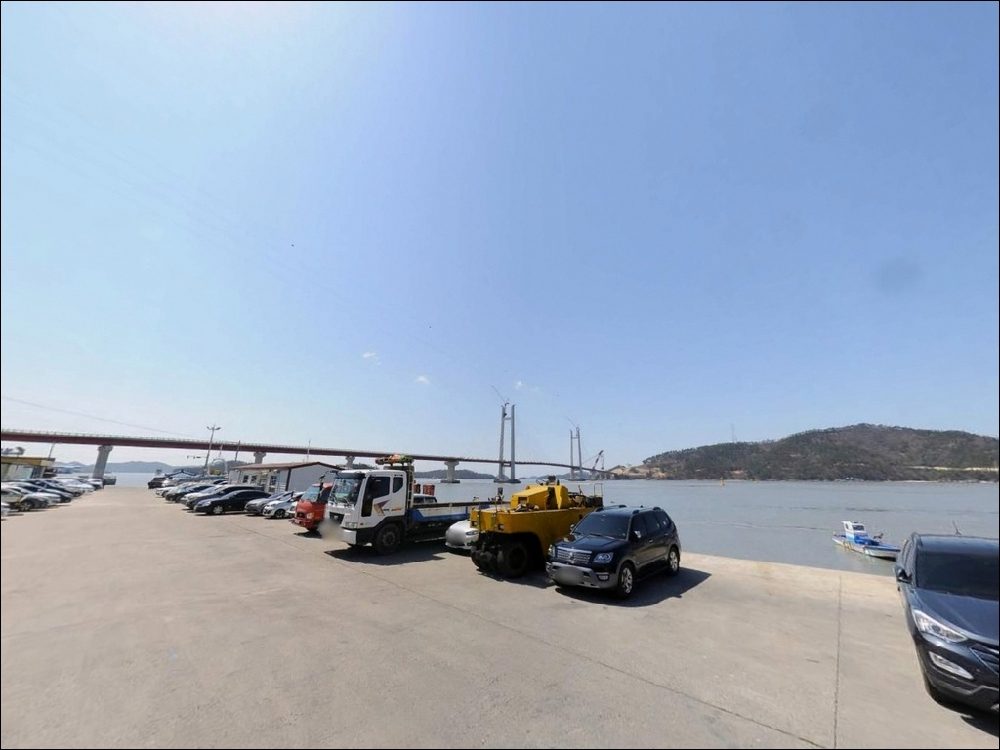
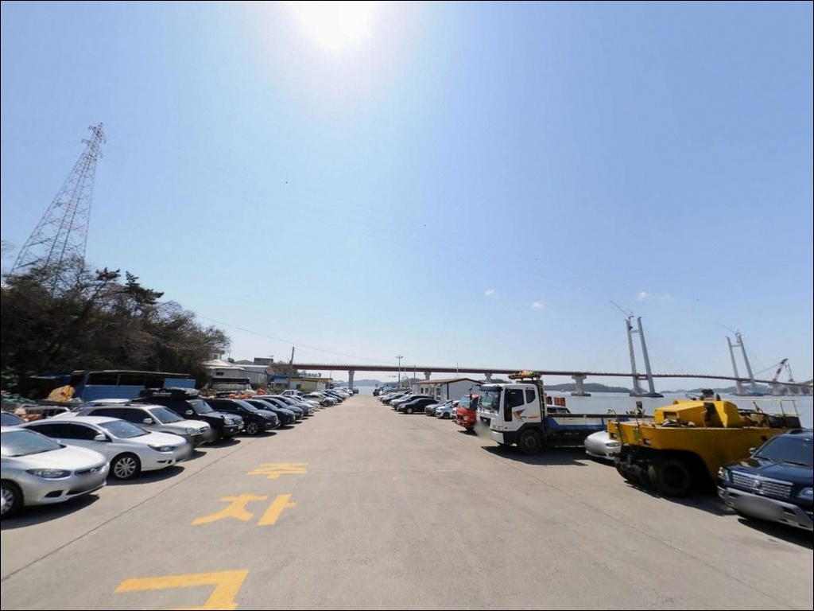
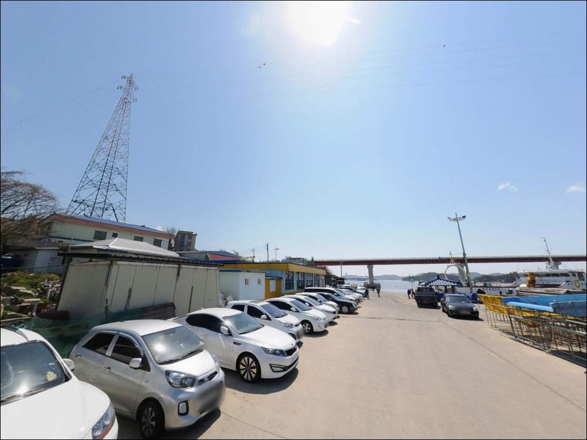
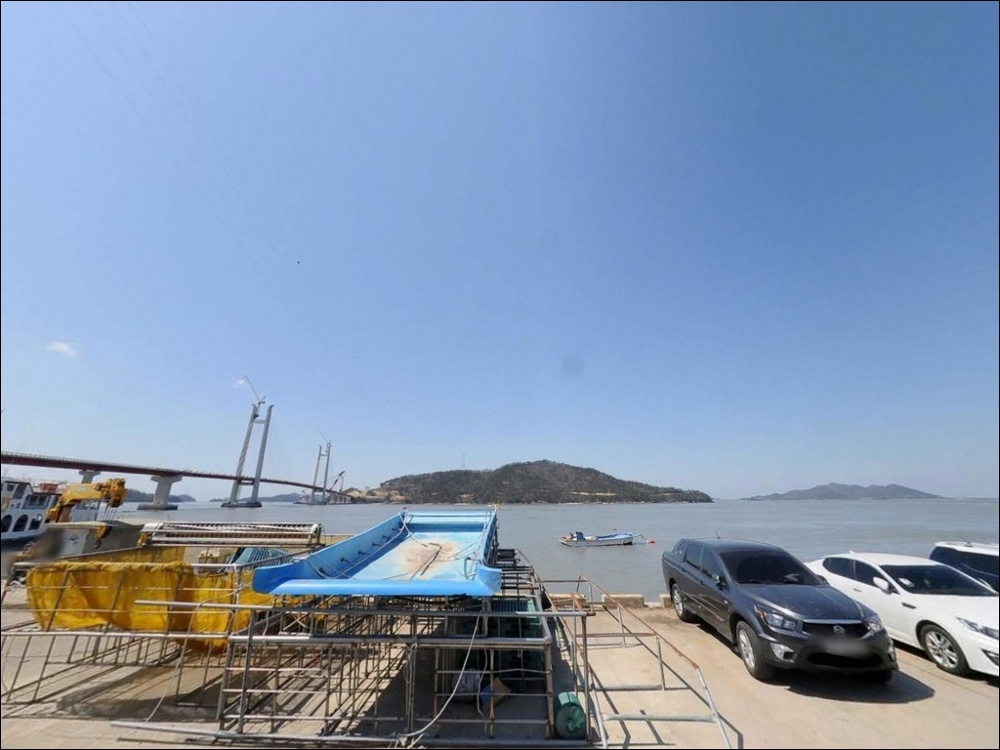
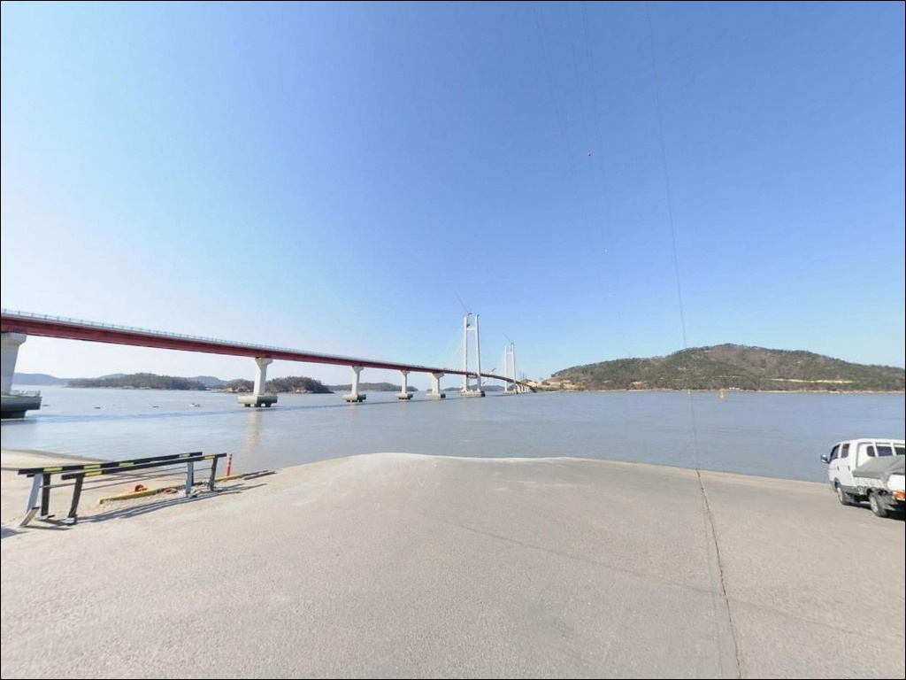
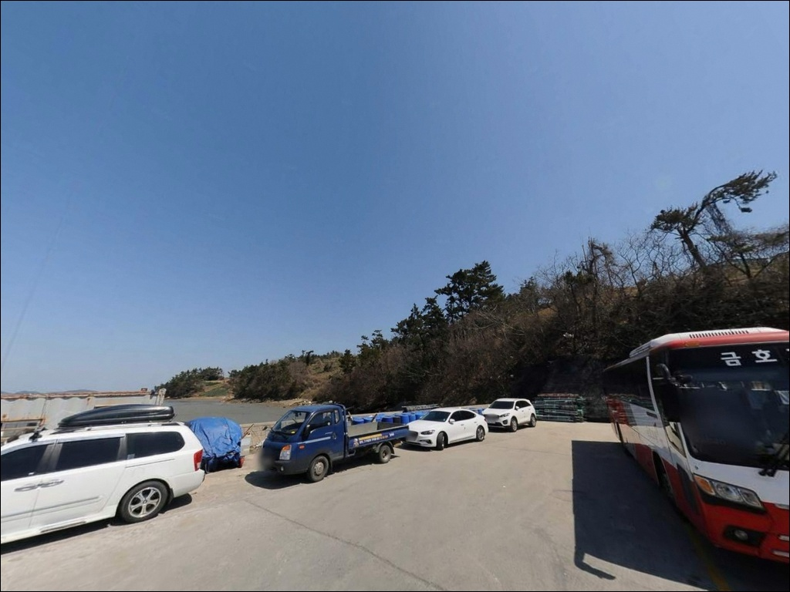

이 페이지에는 광고(제휴 링크 포함)가 있으며, 광고 링크를 통해 구매하면 운영자가 판매 수익 또는 수수료를 받을 수 있습니다. 포인트 사진: 카카오맵 스카이뷰·로드뷰. 이 페이지의 지도·사진 이미지는 카카오맵의 실제 서비스 이미지와 다를 수 있습니다.

점암항
전남 신안군 지도읍 감정리 1689
물때 계산 없이 점암항을 찾으면
방파제 앞이 갯벌로 변해
낚시 자리 자체가 없어질 수 있습니다.
서해 지도읍 일대는 조수 간만차가 큰 권역으로,
간조에 바닥이 드러나면
어떤 채비를 써도 입질을 기대하기 어렵습니다.
이 글은 점암항의 지형 구조와 낚시 여건,
진입 환경, 차박 체류 조건에 집중합니다.
조황 단정이나 특정 어종 보장은
이 글의 범위에 포함되지 않습니다.

점암항은 임자2대교 교각 인근에 자리한
소규모 선착장 형태의 어항입니다.
지도읍 감정리 농로를 따라
차량이 진입하는 구조이며,
서해랑길 29·30코스의 종점·시점으로 이어지는 지점이라
도보 여행자에게도 알려진 자리입니다.
진입로는 포장도로로 연결되며
급경사나 비포장 구간이 없는 편입니다.
임자도 방면 여객선이 기항하는 터미널 구조상
차량 회차를 고려한 포장 공간이 확보되어 있습니다.
소형에서 중형 SUV 기준 진입과 회차는
크게 무리 없는 수준이며,
여객선 터미널 앞 주차 부지가
낚시 방문 시 주차 후보로 활용 가능합니다.
다만 여객선 출·입항 시간대에는
승하차 차량이 몰리는 구간이 생깁니다.
운항 시간표를 미리 확인한 뒤
주차 위치를 잡는 것이 기본 준비이며,
터미널 동선을 막지 않는 자리를 먼저 선택합니다.

점암항 일대는 감정리 농경지와 소규모 어촌 마을이
조용하게 이어지는 분위기입니다.
야간에는 차량 통행이 적고
민가 밀집도가 낮아
프라이버시 여건은 나쁘지 않은 편입니다.
여객선 터미널 인근이라 기본 조명 시설이
어느 정도 갖춰져 있지만,
낚시 자리 전 구간이 충분히 밝다고 단정하기 어려우므로
헤드랜턴은 반드시 준비해야 합니다.
내만형 구조라 외해 파도 직접 영향은 적은 편입니다.
다만 바람 방향에 따라 체감 차이가 생길 수 있어
기상 예보 확인 후 출발하는 것이
야간 체류 실패를 줄이는 조건입니다.
장기 차박이나 캠핑 중심이라면
점암항보다 임자도 대광해수욕장 인근을
대안으로 검토하는 것이 현실적입니다.

점암항에서 확인된 편의시설은
터미널 부지 내 풍차 모양 공중화장실입니다.
실제 운영이 확인된 시설로,
낚시 방문 시 기본 위생 여건은
갖춰져 있는 편입니다.
그 외 편의점·마트·주유소는
지도읍 읍내 방향으로 이동해야 합니다.
지도읍 읍내까지는 차량으로
10분 내외 거리이며,
북신안농협·지도우체국·신안수협 등
기본 생활 인프라가 집중되어 있습니다.
낚시 소품·식수·얼음은
출발 전 또는 읍내에서 미리 보충하는 동선이
효율적입니다.
반경 10km권으로 이동하면
임자도 대광해수욕장과 증도 권역이 연결됩니다.
태평염전·낙조전망대 등 관광 자원이 있어,
장기 여행 동선 기준으로 점암항을 시작점으로 삼고
증도·임자도 권역을 묶어 계획하는 방식이
이 일대를 가장 잘 활용하는 루트입니다.

점암항 방문 전에 가장 먼저 확인할 것은
물때입니다.
서해 지도읍 일대는 조수 간만차가
3~5m 이상에 달하는 권역으로,
간조 때 바닥이 드러나면
낚시 공간 자체가 사라질 수 있습니다.
바다타임에서 신안 지도읍 기준 물때를 확인하고,
밀물이 들어오는 시간대를 중심으로
입장 시각을 맞추는 것이 기본 전략입니다.
서해 특성상 짙은 안개와 갑작스러운 강풍이
발생하는 경우가 있습니다.
기상청 예보를 당일 아침 다시 확인하고,
풍랑 특보 시에는 과감히 일정을 조정해야 합니다.
반경 3km 이내 편의시설을 기대하기 어려우므로
식수·얼음·채비 여분·비상약품은
출발 전에 완비하는 것이 원칙입니다.
임자도 방면 여객선이 운항하는 선착장이므로
어선 및 여객선 동선에 방해가 되는 자리는 피합니다.
야간 낚시 시에는 구명조끼와 헤드랜턴을
반드시 착용해야 합니다.

점암항은 내만 쪽으로 보호된 연안형 구조의 소규모 어항입니다.
방파제는 짧은 편이며,
항 내부는 얕은 수심이 형성되고
방파제 끝단이나 수로 입구 쪽에서
수심 변화가 상대적으로 빠른 구간이 생깁니다.
갯벌이 발달한 서해 내만형 지형 특성상
간조 시 낚시 공간이 급격히 줄어드는
구조를 먼저 이해해야 합니다.
임자2대교 교각 인근은 조류가 가속되는 구간으로,
소형 루어 탐색에 유리한 자리입니다.
밀물이 들어오면서 조류 흐름이 살아나는 시간대에
어종 활성도가 높아지는 서해 전형 패턴이
이 일대에도 그대로 적용됩니다.
2~6물 사이, 특히 밀물 초입 시간대가
입질 기대치가 가장 높아지는 타이밍입니다.
최신 조황은 출조 전에 반드시 검색해 보시기 바랍니다.

원투낚시가 이 포인트에서 가장 무난하게 맞는 방식입니다.
방파제 끝단이나 수로 입구 방향으로 채비를 보내
바닥층을 탐색하는 방식이며,
청갯지렁이 미끼를 기본으로 하고
밀물 시간대에 집중하는 전략이 유효합니다.
서해 내만형 지형에서 기대할 수 있는 어종으로는
망둥어·우럭·노래미·붕장어·숭어 등
생활낚시 어종이 중심입니다.
루어낚시는 임자2대교 교각 주변이
탐색 구간으로 어울립니다.
소형 메탈지그나 미노우 계열로
조류가 모이는 교각 아래를 노리는 방식이며,
수온이 오르는 늦봄~초가을 야간에는
소형 농어 회유를 기대해 볼 수 있는 구간입니다.
릴찌낚시는 내항 전면부에서
숭어를 대상으로 중상층을 노리는 방식으로
이 포인트 구조와 맞는 편입니다.
바람이 약한 날 내항 쪽을 선택하면
안정적인 채비 운용이 가능합니다.
점암항은 물때를 맞추면
원투와 루어 복수 운용이 가능한
생활낚시형 방파제입니다.

점암항 조류 여건이 여의치 않거나
주차 공간이 부족할 경우,
첫 번째 대안은 지도읍 읍내 인근 선착장입니다.
규모가 더 크고 접근성이 안정적인 편이며,
읍내 인프라를 바로 이용할 수 있어
장시간 체류에 더 유리한 동선입니다.
점암항에서 여객선을 이용하면
임자도 진리항까지 이동할 수 있습니다.
임자도는 대광해수욕장을 끼고 있는 권역으로,
방파제와 해안선이 비교적 다양하게 펼쳐져 있습니다.
당일 동선에 여유가 있다면
임자도 진리항과 함께 묶어 계획하는 방식이
이 권역을 충분히 활용하는 선택입니다.
증도 방향으로 이동하면
태평염전과 낙조전망대가 있는 권역이 연결됩니다.
장기 여행·차박 동선 기준으로
점암항을 기점으로 삼고
증도·임자도 권역을 함께 탐색하는 방식이
이 일대를 가장 효율적으로 즐기는 루트입니다.

원투낚시나 소형 루어를 즐기는 낚시인이라면
점암항의 내만형 방파제 구조는
맞는 지형입니다.
밀물 시간대를 기준으로 진입하고,
임자2대교 교각 주변 조류 구간을 탐색하면
생활낚시형 포인트로서의 자리가
충분히 확인됩니다.
반면 간조 타이밍에 준비 없이 찾아가거나
편의시설을 기대하고 진입하면
빈손으로 돌아오는 상황이 될 수 있습니다.
물때 확인, 자급 준비, 여객선 시간표 점검,
이 세 가지를 갖추면
조용한 어촌 선착장에서 여유 있는 하루를
만들 수 있는 포인트입니다.
서해랑길이 지나는 작은 선착장에
차를 세우고 물때 맞춰 채비 하나 풀어보는 것,
그것만으로도 점암항은 충분히 찾을 이유가 있는 자리입니다.